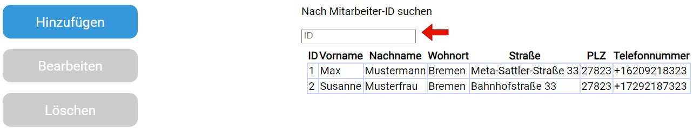
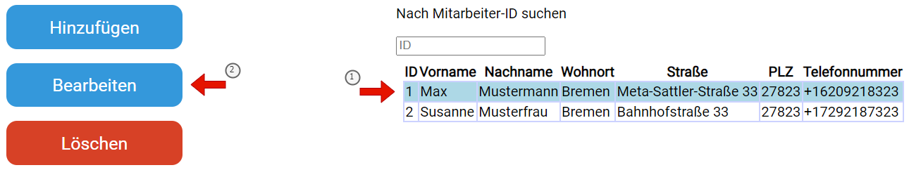
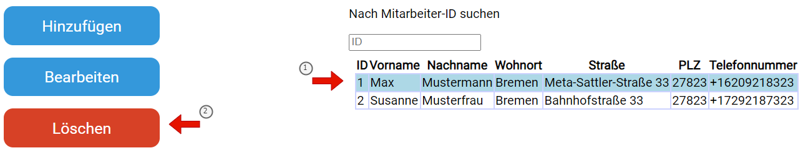

Zur Startseite navigieren
Auf das Logo in der oberen linken Ecke drücken, um zurück zur Startseite zu gelangen.
Auf den Hyperlink unten auf der jeweiligen Seite drücken, um zurück zur Startseite zu gelangen.
Nach einem Mitarbeiter in der Tabelle suchen
ID des gesuchten Mitarbeiters in der Suchleiste eingeben.
Die Daten des eingegebenen Mitarbeiters werden anstelle der Tabelle ausgegeben,
sollte kein Mitarbeiter mit der angegebenen ID existieren wird nichts ausgegeben.
Neuen Mitarbeiter hinzufügen
Auf den Knopf "Hinzufügen" drücken.
Daten des Mitarbeiters eintragen.
Anschließend auf den Knopf "Speichern" drücken. Der neu hinzugefügte
Mitarbeiter wird nun in der Tabelle auf der Startseite angezeigt.
Mitarbeiter bearbeiten
Mitarbeiter aus der Tabelle auswählen, anschließend auf den Knopf "Bearbeiten" drücken.
Die Felder werden automatisch mit den Daten des ausgewählten Mitarbeiters aus der Tabelle befüllt.
Anschließend auf den Knopf "Speichern" drücken um die Änderungen zu übernehmen.
Mitarbeiter löschen
Mitarbeiter aus der Tabelle auswählen, anschließend auf den Knopf "Löschen" drücken.